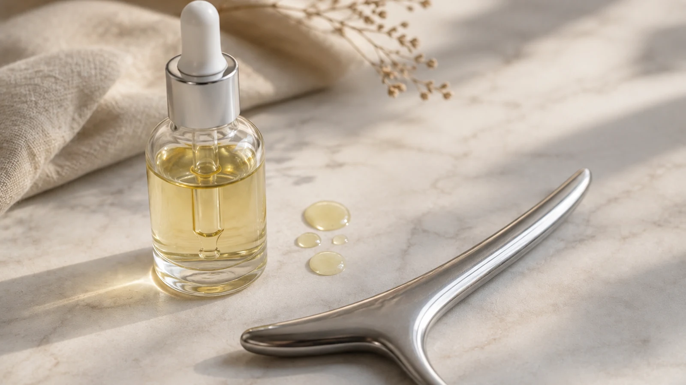

The Bojin Journal · The method
The Two Ends of Your Bojin Stick: When to Use Each

Pick up your bojin stick and look at it properly for a moment. One end is a broad, smooth edge. The other narrows to a small rounded tip. Most women I teach have been using one end for everything and never turning the stick around. That is the single easiest thing to fix in a home practice, and fixing it changes how much the same five minutes gives you back.
So here is the whole idea before any detail: the two ends do two different jobs. The broad edge is for covering and calming a wide area. The rounded tip is for reaching and settling on one small, stubborn spot. Get that match right and the tool starts doing what it was shaped to do.
The broad edge: for covering and calming
This is the end you will use most, and the one that feels the most soothing. Its long, smooth line is made for the wide, flat planes of the face: the forehead, the cheek, the side of the jaw, and the whole length of the neck. When you want to warm an area up, move settled fluid along, or finish a session with long calming passes, this is the end in your hand.
Hold it fairly flat against the skin, so the length of the edge lies along your face rather than digging in on a corner. The angle stays low. The pressure is steady and comfortable, enough to meet the tissue underneath, and the movement is a slow glide over a stretch of skin, not a stab at one point. The feeling should be warm and spread out, the kind that makes you exhale.
Take the forehead as the clearest example. It is one wide, slightly curved plane, which is exactly what the broad edge was made for. Lay the edge flat at the center of your brow, just above the nose, and draw it slowly out toward one temple, following the natural curve of the bone. Do the same a little higher, then higher again, until a few calm fanning passes have covered the whole forehead. Rest your free hand at the temple to steady the skin as you go. You are warming and settling a broad sheet of held tension that a single fingertip would only poke at, and the feeling stays warm and spread across the brow, never a point of pressure. That is the broad edge doing its real job.
The common mistake with the broad edge is tilting it up onto one corner to try to get more into a knot. That turns a calming tool into a digging one and can leave a mark. When you find yourself wanting to press a single point harder, that is your signal to stop and turn the stick around.
The rounded tip: for reaching and settling
The tip is the finishing tool, and it asks for a lighter, more careful hand than people expect. It is made for the small, anchored spots the broad edge glides right over: the tension beside the nostril where a smile line begins, the tight knot at the inner brow, the corner of the jaw just in front of the ear, the small hollow at the temple. Places where the tension gathers into one point rather than spreading over a plane.
Because the tip concentrates your pressure onto a tiny point, the same push that felt gentle with the broad edge feels much stronger here. It is the same reason a narrow heel sinks into soft ground while a flat sole rests on top: the smaller the contact, the more each ounce is felt. So you use less. Bring the tip more upright, settle it on the spot, and work with small circles or a gentle hold-and-release rather than long drags. Not featherlight, not forceful. A focused ache that eases, never a bright, sharp pain.
Anchor the area first. Rest a fingertip of your free hand near the spot so the skin is supported while the tip works, the same supporting hand that keeps any bojin move kind to your skin. And keep the tip where it belongs, on the spots. Dragging it across a wide area the way you would the broad edge is the other common mistake, because a small point traveling a long way under pressure is exactly what irritates skin.
Take the spot beside the nostril, where a smile line begins its climb. This is a point, not a plane, so it belongs to the tip. Bring the rounded tip into the small groove where the cheek meets the nose, hold it fairly upright, and rest a fingertip of your free hand on the cheek just beside it to anchor the skin. Make three or four small, slow circles, or simply settle in and let the spot soften under a steady, gentle hold. The pressure here is a fraction of what the forehead took, because all of it lands on one small point. Done right it is a focused ache that melts as you hold it. If it turns sharp or bright, you are pressing too hard for the tip, and easing back is the whole correction. Twenty or thirty quiet seconds is plenty before you move on.
A quick way to tell which end a spot wants
When you are unsure, ask one question: is this a plane or a point? If your hand wants to travel, gliding along a stretch of skin, that is a plane, and the broad edge belongs there. If you keep returning to one small knot you could cover with a fingertip, that is a point, and the tip belongs there. Most areas are both in sequence. You open the cheek as a plane with the edge, then find the one tight spot near the smile line as a point with the tip, then calm the whole cheek again with the edge. The order almost always runs edge first, tip second, edge to finish.
Put the two together
The real skill is switching ends within one area, so the broad edge opens the ground and the tip does the precise work. Here is that flow on a tight jaw, the place it matters most. Use a little oil or your usual moisturizer for glide.
- Warm the whole jaw with the broad edge Lay the broad edge fairly flat and make a few slow passes from the chin out along the jaw toward the ear, waking the whole area before you settle anywhere.
- Settle the corner knot with the rounded tip Bring the rounded tip to the tight spot just in front of the ear, hold it more upright, and make small, gentle circles with lighter pressure than you used with the edge.
- Finish down the neck with the broad edge Switch back to the broad edge and sweep slowly down the side of the neck, giving everything you loosened a route out. Always end here.
That is the pattern for anywhere on the face: broad edge to open and calm, rounded tip to reach the one spot, broad edge again to carry it away and settle. Once the switch becomes a habit, you stop fighting a knot with the wrong end and let each end do the job it was shaped for.
An honest note
Knowing both ends will not change your face overnight, and it does not need a dedicated stick to start. It makes your practice more precise, so the same gentle, temporary effect builds a little more reliably with consistency. If you only own a gua sha stone today, use its long side as your broad edge and a rounded corner as your tip, and come back to a stick when you are ready. The value was always the method, not the object.
Turn the stick around. That small habit is most of the difference between owning a tool and using a method.
Quick answers
Can I do everything with just the broad edge?
You can do most of the calming, warming, and draining work with the broad edge alone, and many days that is all you need. What you miss is the precise knots the rounded tip reaches, like the tension beside the nostril or at the inner brow. Think of the tip as the finishing tool, not the everyday one.
The rounded tip feels too intense. Am I using it wrong?
Probably the pressure, not the tip itself. Because the tip concentrates force onto a small point, the same push that feels gentle with the broad edge can feel sharp here. Lighten your hand, hold the tip more upright, and settle with small circles rather than long drags. It should feel like a focused ache that eases, never a bright, sharp pain.
Which end do beginners overuse?
Most people default to the broad edge for everything and never pick up the tip, so they never reach the small anchored spots. A smaller group does the opposite and digs the tip in too hard. The fix for both is the same: match the end to the area, and let the pressure stay comfortable.
What if I only own a gua sha stone, not the stick?
The method still applies. Use the stone's long smooth side the way you would the broad edge, for wide calming passes, and use a rounded corner or notch the way you would the tip, for a single tight spot. The shape of a dedicated stick just makes each job a little easier.
See both ends in motion
Reading which end goes where is one thing; watching the switch is another. My free 3-minute video shows the broad edge and the rounded tip working together on the face, so your hands learn the pattern faster than any diagram can teach.
Watch the free 3-min videoYu-Ting Lan is a Taiwan-based international bojin instructor and the founder of Héhé Studio. She has taught her bojin method to more than a thousand students, from complete beginners to grandmothers, across Taiwan, Hong Kong, and Malaysia.